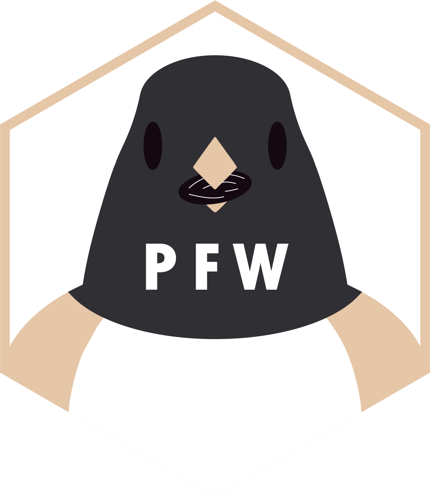

Package index
-
pfw_download() - Download Raw Project FeederWatch Data by Year
-
pfw_import() - Import Project FeederWatch Data
-
pfw_example() - Download and Load Example Project FeederWatch Dataset
-
update_taxonomy() - Update the Project FeederWatch Species Translation Table
-
pfw_sitedata() - Merge Site Metadata into Project FeederWatch Data
-
pfw_filter() - Apply Multiple Filters to Project FeederWatch Data
-
pfw_region() - Filter Project FeederWatch Data by Region
-
pfw_species() - Filter Project FeederWatch Data by Species
-
pfw_date() - Filter Project FeederWatch Data by Month and/or Year
-
pfw_rollup() - Do Taxonomic Rollup on Project FeederWatch Data
-
pfw_truncate() - Filter Project FeederWatch Data to "Standard" Seasonal Window
-
pfw_zerofill() - Zerofill Species not Detected in each Survey Instance for Analysis
-
pfw_attr() - View Filter Attributes on Manipulated Project FeederWatch Data
-
pfw_dictionary() - Look Up Definitions from the Project FeederWatch Data Dictionary